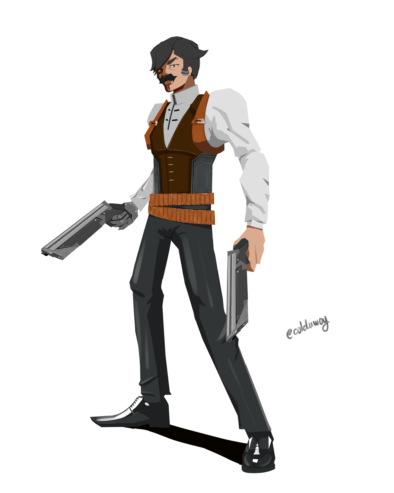

Characters
-

David Martinez (デイビッド・マルティネス)
A Latino American teenager who is a top student at the prestigious Arasaka Academy
-

Lucyna "Lucy" Kushinada (ルーシー,)
A young netrunner who introduces with David to the criminal underworld of Night City.
-
Rebecca (レベッカ)
A trigger-happy edgerunner and a member of Maine's crew. She is also Pilar's younger sister
-
Maine (メイン)
A veteran edgerunner who commands his own crew.
-

Dorio (ドリオ)
Maine's girlfriend and second-in-command.
-

Pilar (ピラル)
A foul-mouthed techie and a member of Maine's crew. He is also Rebecca's older brother.
-

Kiwi (キーウィ)
A veteran netrunner who is often cold and stoic, and a member of Maine's crew.
-

Falco (ファルコ)
A member of Maine's crew who works as the group's getaway driver.
-
Faraday (ファラデー)
A fixer who works for Militech.
-

Ripperdoc (リパードク)
A local ripperdoc who helps upgrade and install David's cybernetic implants.
-

Gloria Martinez (グロリア・マルティネス)
David's mother and a paramedic who works herself to the bone to pay for his tuition at the Academy
-

Adam Smasher (アダム・スマッシャー)
A bloodthirsty and fully cybernetic supersoldier who works for Arasaka as their chief of security.1